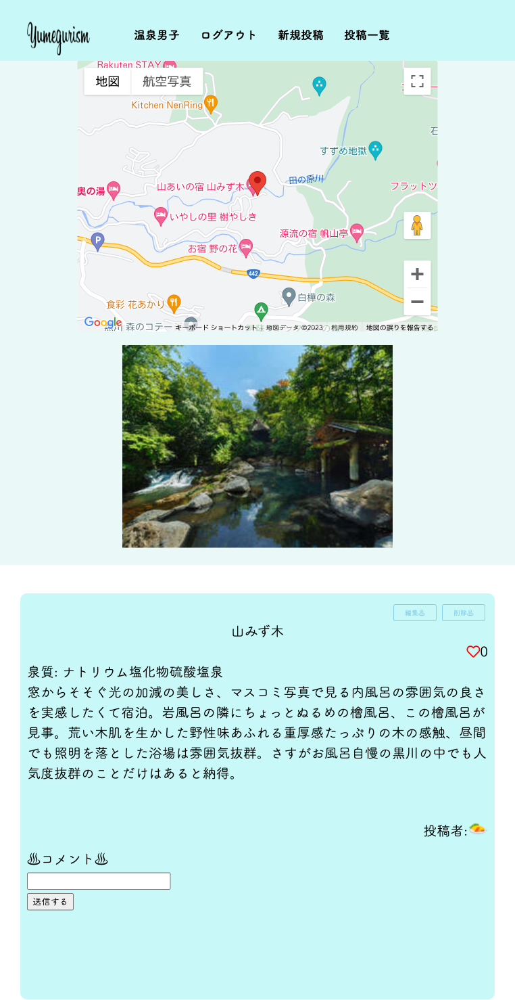

yumegurism

開発環境
Ruby / Ruby on Rails / MySQL / GitHub / Render / Visual Studio Code / Trello
-
概要
制作時間 90時間 URL https://onsenapp-1231.onrender.com ID admin PASS 3993 -
動作テスト
テスト用アカウント
mail Yuki@gmail.com PASS Yuki1231
OUTLINEアプリケーションの概要
オリジナルアプリケーションとして、温泉を共有をするSNSを開発しました。
主な機能は、ユーザー登録機能、行った温泉の投稿機能、コメント機能、いいね機能です。
トップページにアクセスすると、アプリの使い方、どういう方に向けて作成したかについて確認することができます。
ユーザー登録をすると、それらのタイムラインに自身の投稿をすることができます。画像を添付することや、行った温泉地をGoogleマップで表示することができます。
また、ユーザー同士がコミュニュケーションをとる機能として、コメント・いいねをすることができます。
-
開発に至った経緯
私自身、日帰り温泉に行ったり、旅館にたまに泊まりにいくことがあります。その際に評価であったり、雰囲気で行く場所を決めています。
ネットで探してみると 情報量が多く、決めかねることが多々あります。
知りたい情報をすぐに得ることができるコンパクトなアプリケーションがあったら便利と考えこのアプリを制作することにしました。
-
開発で工夫したこと
1.ユーザーが得たい情報を得れるか
・詳細ページからGoogleマップ、泉質、温泉の紹介文を記入するように実装しました。
・一覧ページからは画像がすぐに見えるように配置しました。2.ユーザーが楽しんでもらうため
・温泉のシズル感を出したデザイン（背景を温泉の湯気、色をイメージ）して実装しました。
・コメントを入力、削除、いいね機能の回数の表示をして他のユーザーからの評価が見えるように実装しました。3.ユーザー目線を考えた実装
・レスポンシブデザインを実装し、スマホでも使いやすいように実装しました。
・ランディングページを作り、機能をあらかじめ説明することによって使ってみたくなるよう構成。
OTHERSその他実績
-
yumegurism
Ruby / Ruby on Rails / MySQL / GitHub / Render / Visual Studio Code / Trello